From Terrace to Thoroughfare: The Documentary Life of 862–872 Broadway and 30 East 18th Street, 1815–2014
Every previously italicized phrase is highlighted and colour-coded by source. Where the source page is on file, clicking the highlight opens the scan.
The earliest surviving record finds the eastern parcel entirely undeveloped, a quiet expanse awaiting the city's northward march. As the register of that era attests, ("In the 1815 Blue Book, on 30 East 18th Street, there is reference to 0 structures.") For more than three decades thereafter, the land lay in anticipation of the residential terrace that would soon define the block.
That transformation arrived at mid-century, when a distinguished row of dwellings rose along Broadway. The architectural chronicle records their genesis in unambiguous terms: ("ROW HOUSE, No. 862 1847-48; remodeled 1921, by John B. Snook & Sons. [4 stories] It is astonishing that these brick row Houses have survived in any from.") Its immediate neighbor shared both vintage and pedigree, for the same account observes that ("ROW HOUSE, No. 864 1847-48 (4 stories) Mostly stripped of original architectural fabric, this building still has half-height attic windows.")
By the following decade the fashionable character of these residences was fully apparent in the cartographic record. The mid-century survey catalogues them with meticulous precision, noting that ("In the 1853 Perris Maps, on 862 Broadway, there is reference to 1 Structure; Brick or Stone dwellings first class (slate or metal roof & coped) with Framed Extension.") The pattern continued along the terrace, as ("In the 1853 Perris Maps, on 864 Broadway, there is reference to 1 Structure; Brick or Stone dwellings first class (slate or metal roof & coped) with Framed Extension.") One dwelling stood apart in its detailing, however, for ("In the 1853 Perris Maps, on 866 Broadway, there is reference to 1 Structure; Brick or Stone dwellings first class (slate or metal roof & coped) with Brick or Stone Extension and skylights lighting the top floor only.") The remaining lots conformed to the prevailing type, so that ("In the 1853 Perris Maps, on 868 Broadway, there is reference to 1 Structure; Brick or Stone dwellings first class (slate or metal roof & coped) with Framed Extension,") and likewise ("In the 1853 Perris Maps, on 870 Broadway, there is reference to 1 Structure; Brick or Stone dwellings first class (slate or metal roof & coped) with Framed Extension,") and finally ("In the 1853 Perris Maps, on 872 Broadway, there is reference to 1 Structure; Brick or Stone dwellings first class (slate or metal roof & coped) with Framed Extension.") The eastern parcel, meanwhile, remained conspicuously vacant, for ("In the 1853 Perris Maps, on 30 East 18th Street, there is reference to 0 Structures.")
By the close of the Civil War the block had filled in decisively, and the surveyor of the period reduced each holding to its essential fact. Thus ("In the 1867 Dripps Plan, on 862 Broadway, there is reference to 1 Structure; Building,") just as ("In the 1867 Dripps Plan, on 864 Broadway, there is reference to 1 Structure; Building,") and ("In the 1867 Dripps Plan, on 866 Broadway, there is reference to 1 Structure; Building,") and ("In the 1867 Dripps Plan, on 868 Broadway, there is reference to 1 Structure; Building.") The northern lots proved more densely occupied, for ("In the 1867 Dripps Plan, on 870 Broadway, there is reference to 2 structures; Building, Building,") while ("In the 1867 Dripps Plan, on 872 Broadway, there is reference to 3 structures; Building, Building, Building.") Most tellingly, the once-empty eastern parcel had at last been improved, as ("In the 1867 Dripps Plan, on 30 East 18th Street, there is reference to 1 Structure; Building.")
As the district matured into a commercial thoroughfare, the residential dwellings gave way to enterprise. A directory of the age preserves one such establishment in its listing, recording under ("Shopping Directory. Staten Island Dyeing Establishment, 870 Broadway and 610 Sixth av.") That same year the atlas of the period distilled the material substance of the surviving fabric, noting that ("In the 1885 Robinsons Atlas, on 866 Broadway, there is reference to 1 Structure; Brick building,") and correspondingly that ("In the 1885 Robinsons Atlas, on 30 East 18th Street, there is reference to 1 Structure; Brick building.")
The turn toward the twentieth century brought a fuller accounting of scale and material. The atlas of the late nineties enumerated the row in uniform terms, observing that ("In the 1897 Bromleys Atlas, on 862 Broadway, there is reference to 1 Structure; 4 Story Brick building,") and equally that ("In the 1897 Bromleys Atlas, on 864 Broadway, there is reference to 1 Structure; 4 Story Brick building,") and ("In the 1897 Bromleys Atlas, on 866 Broadway, there is reference to 1 Structure; 4 Story Brick building,") and ("In the 1897 Bromleys Atlas, on 868 Broadway, there is reference to 1 Structure; 4 Story Brick building,") and ("In the 1897 Bromleys Atlas, on 870 Broadway, there is reference to 1 Structure; 4 Story Brick building,") and ("In the 1897 Bromleys Atlas, on 872 Broadway, there is reference to 1 Structure; 4 Story Brick building.") The eastern holding likewise entered the record, for ("In the 1897 Bromleys Atlas, on 30 East 18th Street, there is reference to 1 Structure; Brick building.")
The new century inaugurated an era of ambitious refacing, as the antiquated dwellings were adapted to commercial fashion. The most conspicuous of these transformations occurred at the northernmost address, where, as the designation record relates, ("In 1901, a new stone facade with large show windows was constructed at No. 872.") A comparable modernization soon followed nearby, for ("870 Broadway received its early-20th commercial style facade as the result of a 1915 alteration.")
By the mid-1910s these alterations were legible in the cartographic record, which now registered ground-floor commerce throughout the block. Thus ("In the 1916 Atlas of the Borough of Manhattan, on 862 Broadway, there is reference to 1 Structure; 4 Story Brick building with Store and Brick Extension and 1 Story Brick Extension,") while ("In the 1916 Atlas of the Borough of Manhattan, on 864 Broadway, there is reference to 1 Structure; 4 Story Brick building with Store and 1 Story Brick Extension,") and ("In the 1916 Atlas of the Borough of Manhattan, on 866 Broadway, there is reference to 1 Structure; 4 Story Brick building with Store and 1 Story Brick Extension,") and ("In the 1916 Atlas of the Borough of Manhattan, on 868 Broadway, there is reference to 1 Structure; 4 Story Brick building with Store and 1 Story Brick Extension.") The recently refaced structures were noted with their distinguishing features, for ("In the 1916 Atlas of the Borough of Manhattan, on 870 Broadway, there is reference to 1 Structure; 4 Story Brick building with Store ,") and ("In the 1916 Atlas of the Borough of Manhattan, on 872 Broadway, there is reference to 1 Structure; 4 Story Brick building with Store and Elevators.") The eastern property, too, had assumed a commercial cast, as ("In the 1916 Atlas of the Borough of Manhattan, on 30 East 18th Street, there is reference to 1 Structure; 4 Story Brick Extension with Store.")
The wave of modernization crested at the southernmost dwelling in the early 1920s, where a storefront was inserted beneath the venerable brickwork. As the designation record explains, ("A ground-story storefront was installed during a 1921 alteration") — a change confirmed by the architectural chronicle's own note that the row house at No. 862 had been ("remodeled 1921, by John B. Snook & Sons.")
The land books of the ensuing decade reflected these commercial adaptations in their entirety. Thus ("In the 1930 Land Book of the Borough of Manhattan, on 862 Broadway, there is reference to 1 Structure; 4 Story Brick building with Store and 1 Story Brick Extension,") and ("In the 1930 Land Book of the Borough of Manhattan, on 864 Broadway, there is reference to 1 Structure; 4 Story Brick building with Store and 1 Story Brick Extension,") and ("In the 1930 Land Book of the Borough of Manhattan, on 866 Broadway, there is reference to 1 Structure; 4 Story Brick building with Store and 1 Story Brick Extension,") and ("In the 1930 Land Book of the Borough of Manhattan, on 868 Broadway, there is reference to 1 Structure; 4 Story Brick building with Store and 1 Story Brick Extension.") The refaced pair retained their distinctive character, for ("In the 1930 Land Book of the Borough of Manhattan, on 870 Broadway, there is reference to 1 Structure; 4 Story Brick building with Store,") and ("In the 1930 Land Book of the Borough of Manhattan, on 872 Broadway, there is reference to 1 Structure; 4 Story Brick building with Store and Elevators.") The eastern address likewise conformed, as ("In the 1930 Land Book of the Borough of Manhattan, on 30 East 18th Street, there is reference to 1 Structure; 4 Story Brick building with Store.")
At mid-century the record was reaffirmed, though now expressed in the broader material vocabulary of the postwar survey. Thus ("In the 1955 Manhattan Land Book, on 862 Broadway, there is reference to 1 Structure; 4 Story Brick or Stone or Concrete building with Store and Brick or Stone or Concrete Extension and 1 Story Brick or Stone or Concrete Extension,") and ("In the 1955 Manhattan Land Book, on 864 Broadway, there is reference to 1 Structure; 4 Story Brick or Stone or Concrete building with Store and 1 Story Brick or Stone or Concrete Extension,") and ("In the 1955 Manhattan Land Book, on 866 Broadway, there is reference to 1 Structure; 4 Story Brick or Stone or Concrete building with Store and 1 Story Brick or Stone or Concrete Extension,") and ("In the 1955 Manhattan Land Book, on 868 Broadway, there is reference to 1 Structure; 4 Story Brick or Stone or Concrete building with Store and 1 Story Brick or Stone or Concrete Extension.") The northern dwellings persisted in their now-familiar guise, so that ("In the 1955 Manhattan Land Book, on 870 Broadway, there is reference to 1 Structure; 4 Story Brick or Stone or Concrete building with Store,") and ("In the 1955 Manhattan Land Book, on 872 Broadway, there is reference to 1 Structure; 4 Story Brick or Stone or Concrete building with Store and Elevators.") The eastern property closed the sequence, for ("In the 1955 Manhattan Land Book, on 30 East 18th Street, there is reference to 1 Structure; 4 Story Brick or Stone or Concrete building with Store.")
In the fullness of time the commercial life of the block found expression in the popular literature of the city. A guide to its offerings recorded, with unaffected enthusiasm, ("Express Manna Kitchen 28 E 18th St (btwn Broadway & Park Ave) 212-228-1044 www.mannakitchen.com (Gramercy Park; 4/5/6/L/N/Q/R to Union Square) Express Manna Kitchen is this fast food Korean place that makes such a good tofu bowl! Eat it! - Dear Drunk Girl.")
The most recent chapter in this long chronicle finds the venerable row house at No. 862 absorbed into the retail geography of a global age. A family guidebook, in describing an Italian purveyor of footwear, noted among its outposts the address in question, observing that ("Geox 575 Madison Avenue, at East 57th Street (212) 355-3029 Subway: 4, 5, 6 to 59th Street; N, Q, R to Lexington Avenue- 59th Street; F to Lexington Avenue-63rd Street www.geox.com Monday-Saturday 10am-8pm; Sunday 11am-7pm This Italian shoe brand ("the shoe that breathes") is the second-best selling brand of sports shoes in Europe, and is distinguished by its design and technology. The perforated outer sole features a waterproof membrane that lets feet breathe, but prevents water from penetrating (science lesson: the membrane's micro-pores are larger than water vapor molecules but smaller than water droplets). Breathable, non-slip, flexible, anti-bacterial, and waterproof or water-resistant, they're ideal for kids. The full line is carried in this U.S. flagship store. Athletic shoes for boys include styles with soccer ball motifs, a style in neon lime and yellow, a white high-top with zipper closure, and a more subdued suede boating shoe. The girls' line includes athletic shoes, casual Mary Janes, studded denim high-top sandals, and a silver mesh ballet flat with a shoelace on the toe and neon lime trim. The kids shoes run from $60 to $80. Geox carries Italian sizes 26 through 37/38 (U.S. sizes 9 through 5 ½), and fit toddlers through about age 8. There's a smattering of kids apparel in the store, as well as the full range of men's and women's shoes and apparel. Additional locations: 731 Lexington Avenue (Upper East Side), 862 Broadway (Union Square to Madison Square).")
Thus the record closes, a continuous thread stretching from a vacant lot of 1815 to the cosmopolitan commerce of the twenty-first century.
Every highlighted quote, in order of appearance, correlated to its underlying source. The swatch matches the highlight colour in the text.
| # | Verbatim Quote (abbreviated) | Source (Author, Title, Year, Page) |
|---|---|---|
| 1 | “"In the 1815 Blue Book, on 30 East 18th Street, there is reference to 0 structures."” | Sackersdorff, 1815 Blue Book, p. 3 [page scan] |
| 2 | “"ROW HOUSE, No. 862 1847-48; remodeled 1921, by John B. Snook & Sons. [4 stories] It is astonishing that these brick row Houses have survived in any from."” | Dunlap, On Broadway, 1990, p. 114 [page scan] |
| 3 | “"ROW HOUSE, No. 864 1847-48 (4 stories) Mostly stripped of original architectural fabric, this building still has half-height attic windows."” | Dunlap, On Broadway, 1990, p. 115 [page scan] |
| 4 | “"In the 1853 Perris Maps, on 862 Broadway, there is reference to 1 Structure; Brick or Stone dwellings first class (slate or metal roof & coped) with Framed Extension."” | Perris, 1853 Perris Maps, p. 56 [page scan] |
| 5 | “"In the 1853 Perris Maps, on 864 Broadway, there is reference to 1 Structure; Brick or Stone dwellings first class (slate or metal roof & coped) with Framed Extension."” | Perris, 1853 Perris Maps, p. 56 [page scan] |
| 6 | “"In the 1853 Perris Maps, on 866 Broadway, there is reference to 1 Structure; Brick or Stone dwellings first class (slate or metal roof & coped) with Brick or Stone…” | Perris, 1853 Perris Maps, p. 56 [page scan] |
| 7 | “"In the 1853 Perris Maps, on 868 Broadway, there is reference to 1 Structure; Brick or Stone dwellings first class (slate or metal roof & coped) with Framed Extension,"” | Perris, 1853 Perris Maps, p. 56 [page scan] |
| 8 | “"In the 1853 Perris Maps, on 870 Broadway, there is reference to 1 Structure; Brick or Stone dwellings first class (slate or metal roof & coped) with Framed Extension,"” | Perris, 1853 Perris Maps, p. 56 [page scan] |
| 9 | “"In the 1853 Perris Maps, on 872 Broadway, there is reference to 1 Structure; Brick or Stone dwellings first class (slate or metal roof & coped) with Framed Extension."” | Perris, 1853 Perris Maps, p. 56 [page scan] |
| 10 | “"In the 1853 Perris Maps, on 30 East 18th Street, there is reference to 0 Structures."” | Perris, 1853 Perris Maps, p. 56 [page scan] |
| 11 | “"In the 1867 Dripps Plan, on 862 Broadway, there is reference to 1 Structure; Building,"” | Dripps, 1867 Dripps Plan, p. 7 [page scan] |
| 12 | “"In the 1867 Dripps Plan, on 864 Broadway, there is reference to 1 Structure; Building,"” | Dripps, 1867 Dripps Plan, p. 7 [page scan] |
| 13 | “"In the 1867 Dripps Plan, on 866 Broadway, there is reference to 1 Structure; Building,"” | Dripps, 1867 Dripps Plan, p. 7 [page scan] |
| 14 | “"In the 1867 Dripps Plan, on 868 Broadway, there is reference to 1 Structure; Building."” | Dripps, 1867 Dripps Plan, p. 7 [page scan] |
| 15 | “"In the 1867 Dripps Plan, on 870 Broadway, there is reference to 2 structures; Building, Building,"” | Dripps, 1867 Dripps Plan, p. 7 [page scan] |
| 16 | “"In the 1867 Dripps Plan, on 872 Broadway, there is reference to 3 structures; Building, Building, Building."” | Dripps, 1867 Dripps Plan, p. 7 [page scan] |
| 17 | “"In the 1867 Dripps Plan, on 30 East 18th Street, there is reference to 1 Structure; Building."” | Dripps, 1867 Dripps Plan, p. 7 [page scan] |
| 18 | “"Shopping Directory. Staten Island Dyeing Establishment, 870 Broadway and 610 Sixth av."” | Putnam's Sons, Ladies Guide and City Directory, 1885, p. 116 [page scan] |
| 19 | “"In the 1885 Robinsons Atlas, on 866 Broadway, there is reference to 1 Structure; Brick building,"” | Robinson, 1885 Robinsons Atlas, p. 15 [page scan] |
| 20 | “"In the 1885 Robinsons Atlas, on 30 East 18th Street, there is reference to 1 Structure; Brick building."” | Robinson, 1885 Robinsons Atlas, p. 15 [page scan] |
| 21 | “"In the 1897 Bromleys Atlas, on 862 Broadway, there is reference to 1 Structure; 4 Story Brick building,"” | Bromley, 1897 Bromleys Atlas, p. 19 [page scan] |
| 22 | “"In the 1897 Bromleys Atlas, on 864 Broadway, there is reference to 1 Structure; 4 Story Brick building,"” | Bromley, 1897 Bromleys Atlas, p. 19 [page scan] |
| 23 | “"In the 1897 Bromleys Atlas, on 866 Broadway, there is reference to 1 Structure; 4 Story Brick building,"” | Bromley, 1897 Bromleys Atlas, p. 19 [page scan] |
| 24 | “"In the 1897 Bromleys Atlas, on 868 Broadway, there is reference to 1 Structure; 4 Story Brick building,"” | Bromley, 1897 Bromleys Atlas, p. 19 [page scan] |
| 25 | “"In the 1897 Bromleys Atlas, on 870 Broadway, there is reference to 1 Structure; 4 Story Brick building,"” | Bromley, 1897 Bromleys Atlas, p. 19 [page scan] |
| 26 | “"In the 1897 Bromleys Atlas, on 872 Broadway, there is reference to 1 Structure; 4 Story Brick building."” | Bromley, 1897 Bromleys Atlas, p. 19 [page scan] |
| 27 | “"In the 1897 Bromleys Atlas, on 30 East 18th Street, there is reference to 1 Structure; Brick building."” | Bromley, 1897 Bromleys Atlas, p. 19 [page scan] |
| 28 | “"In 1901, a new stone facade with large show windows was constructed at No. 872."” | LPC, Ladies Mile Historic District Designation Report |
| 29 | “"870 Broadway received its early-20th commercial style facade as the result of a 1915 alteration."” | LPC, Ladies Mile Historic District Designation Report |
| 30 | “"In the 1916 Atlas of the Borough of Manhattan, on 862 Broadway, there is reference to 1 Structure; 4 Story Brick building with Store and Brick Extension and 1 Story…” | G W Bromley & Co, 1916 Atlas of the Borough of Manhattan, p. 55 [page scan] |
| 31 | “"In the 1916 Atlas of the Borough of Manhattan, on 864 Broadway, there is reference to 1 Structure; 4 Story Brick building with Store and 1 Story Brick Extension,"” | G W Bromley & Co, 1916 Atlas of the Borough of Manhattan, p. 55 [page scan] |
| 32 | “"In the 1916 Atlas of the Borough of Manhattan, on 866 Broadway, there is reference to 1 Structure; 4 Story Brick building with Store and 1 Story Brick Extension,"” | G W Bromley & Co, 1916 Atlas of the Borough of Manhattan, p. 55 [page scan] |
| 33 | “"In the 1916 Atlas of the Borough of Manhattan, on 868 Broadway, there is reference to 1 Structure; 4 Story Brick building with Store and 1 Story Brick Extension."” | G W Bromley & Co, 1916 Atlas of the Borough of Manhattan, p. 55 [page scan] |
| 34 | “"In the 1916 Atlas of the Borough of Manhattan, on 870 Broadway, there is reference to 1 Structure; 4 Story Brick building with Store ,"” | G W Bromley & Co, 1916 Atlas of the Borough of Manhattan, p. 55 [page scan] |
| 35 | “"In the 1916 Atlas of the Borough of Manhattan, on 872 Broadway, there is reference to 1 Structure; 4 Story Brick building with Store and Elevators."” | G W Bromley & Co, 1916 Atlas of the Borough of Manhattan, p. 55 [page scan] |
| 36 | “"In the 1916 Atlas of the Borough of Manhattan, on 30 East 18th Street, there is reference to 1 Structure; 4 Story Brick Extension with Store."” | G W Bromley & Co, 1916 Atlas of the Borough of Manhattan, p. 55 [page scan] |
| 37 | “"A ground-story storefront was installed during a 1921 alteration"” | LPC, Ladies Mile Historic District Designation Report |
| 38 | “"remodeled 1921, by John B. Snook & Sons."” | Dunlap, On Broadway, 1990, p. 114 [page scan] |
| 39 | “"In the 1930 Land Book of the Borough of Manhattan, on 862 Broadway, there is reference to 1 Structure; 4 Story Brick building with Store and 1 Story Brick Extension,"” | Bromley, 1930 Land Book of the Borough of Manhattan, p. 54 [page scan] |
| 40 | “"In the 1930 Land Book of the Borough of Manhattan, on 864 Broadway, there is reference to 1 Structure; 4 Story Brick building with Store and 1 Story Brick Extension,"” | Bromley, 1930 Land Book of the Borough of Manhattan, p. 54 [page scan] |
| 41 | “"In the 1930 Land Book of the Borough of Manhattan, on 866 Broadway, there is reference to 1 Structure; 4 Story Brick building with Store and 1 Story Brick Extension,"” | Bromley, 1930 Land Book of the Borough of Manhattan, p. 54 [page scan] |
| 42 | “"In the 1930 Land Book of the Borough of Manhattan, on 868 Broadway, there is reference to 1 Structure; 4 Story Brick building with Store and 1 Story Brick Extension."” | Bromley, 1930 Land Book of the Borough of Manhattan, p. 54 [page scan] |
| 43 | “"In the 1930 Land Book of the Borough of Manhattan, on 870 Broadway, there is reference to 1 Structure; 4 Story Brick building with Store,"” | Bromley, 1930 Land Book of the Borough of Manhattan, p. 54 [page scan] |
| 44 | “"In the 1930 Land Book of the Borough of Manhattan, on 872 Broadway, there is reference to 1 Structure; 4 Story Brick building with Store and Elevators."” | Bromley, 1930 Land Book of the Borough of Manhattan, p. 54 [page scan] |
| 45 | “"In the 1930 Land Book of the Borough of Manhattan, on 30 East 18th Street, there is reference to 1 Structure; 4 Story Brick building with Store."” | Bromley, 1930 Land Book of the Borough of Manhattan, p. 54 [page scan] |
| 46 | “"In the 1955 Manhattan Land Book, on 862 Broadway, there is reference to 1 Structure; 4 Story Brick or Stone or Concrete building with Store and Brick or Stone or…” | Bromley, 1955 Manhattan Land Book, p. 44 [page scan] |
| 47 | “"In the 1955 Manhattan Land Book, on 864 Broadway, there is reference to 1 Structure; 4 Story Brick or Stone or Concrete building with Store and 1 Story Brick or Stone…” | Bromley, 1955 Manhattan Land Book, p. 44 [page scan] |
| 48 | “"In the 1955 Manhattan Land Book, on 866 Broadway, there is reference to 1 Structure; 4 Story Brick or Stone or Concrete building with Store and 1 Story Brick or Stone…” | Bromley, 1955 Manhattan Land Book, p. 44 [page scan] |
| 49 | “"In the 1955 Manhattan Land Book, on 868 Broadway, there is reference to 1 Structure; 4 Story Brick or Stone or Concrete building with Store and 1 Story Brick or Stone…” | Bromley, 1955 Manhattan Land Book, p. 44 [page scan] |
| 50 | “"In the 1955 Manhattan Land Book, on 870 Broadway, there is reference to 1 Structure; 4 Story Brick or Stone or Concrete building with Store,"” | Bromley, 1955 Manhattan Land Book, p. 44 [page scan] |
| 51 | “"In the 1955 Manhattan Land Book, on 872 Broadway, there is reference to 1 Structure; 4 Story Brick or Stone or Concrete building with Store and Elevators."” | Bromley, 1955 Manhattan Land Book, p. 44 [page scan] |
| 52 | “"In the 1955 Manhattan Land Book, on 30 East 18th Street, there is reference to 1 Structure; 4 Story Brick or Stone or Concrete building with Store."” | Bromley, 1955 Manhattan Land Book, p. 44 [page scan] |
| 53 | “"Express Manna Kitchen 28 E 18th St (btwn Broadway & Park Ave) 212-228-1044 www.mannakitchen.com (Gramercy Park; 4/5/6/L/N/Q/R to Union Square) Express Manna Kitchen is…” | Halliday, Zinester's Guide to NYC, 2011, p. 42 [page scan] |
| 54 | “"Geox 575 Madison Avenue, at East 57th Street (212) 355-3029 Subway: 4, 5, 6 to 59th Street; N, Q, R to Lexington Avenue- 59th Street; F to Lexington Avenue-63rd Street…” | Berman & Hederman, New York City With Children, 2014, p. 393 [page scan] |
13 scanned pages, one per cited source page. Each lists the highlighted quotes drawn from it.
Quotes drawn from this page: 1
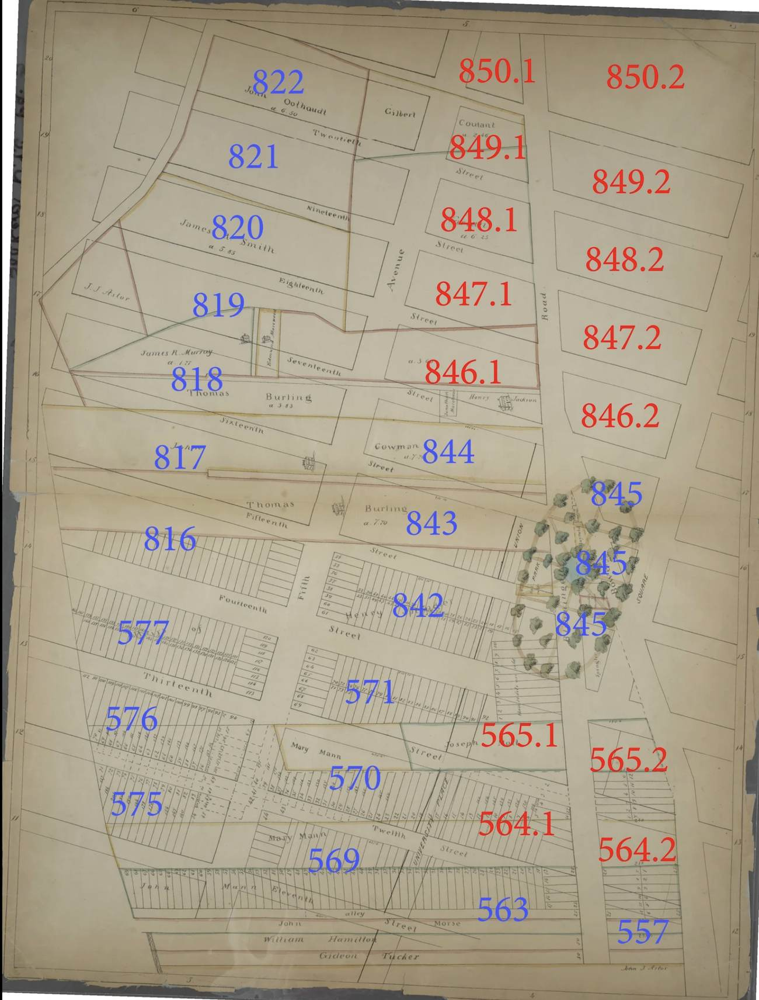
Quotes drawn from this page: 2 38
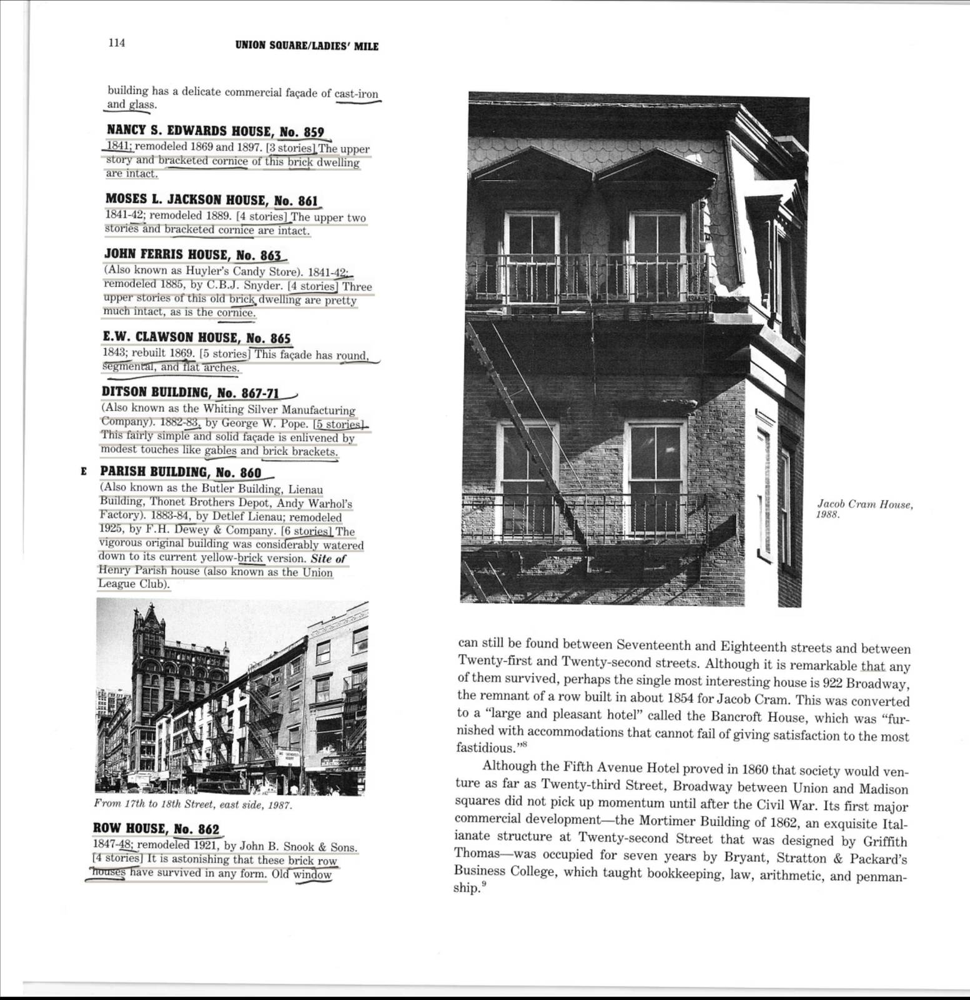
Quotes drawn from this page: 3
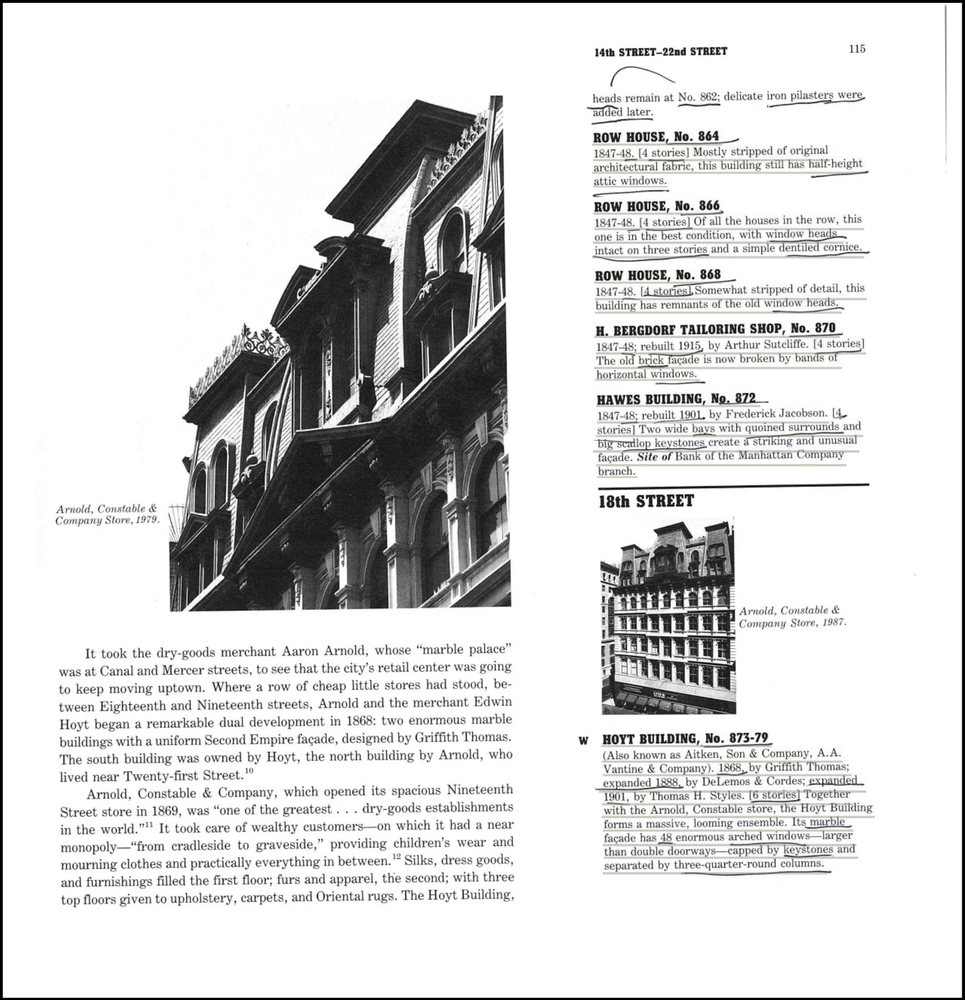
Quotes drawn from this page: 4 5 6 7 8 9 10
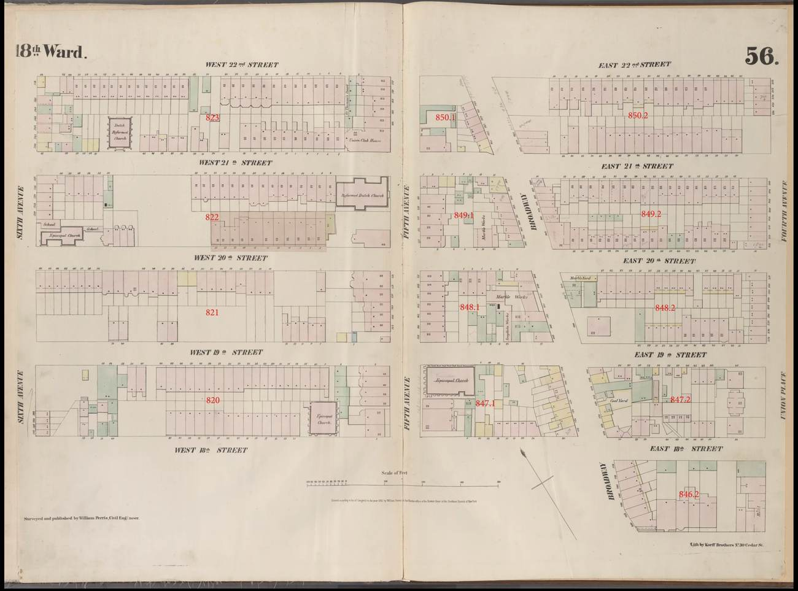
Quotes drawn from this page: 11 12 13 14 15 16 17
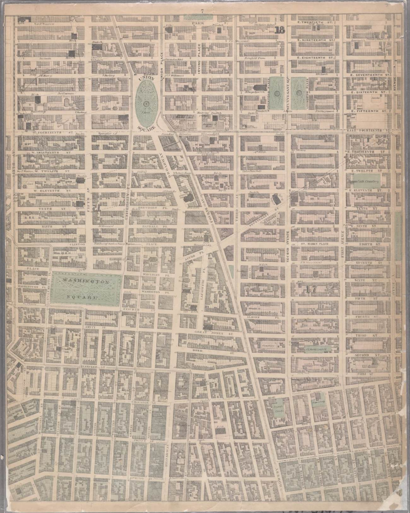
Quotes drawn from this page: 18
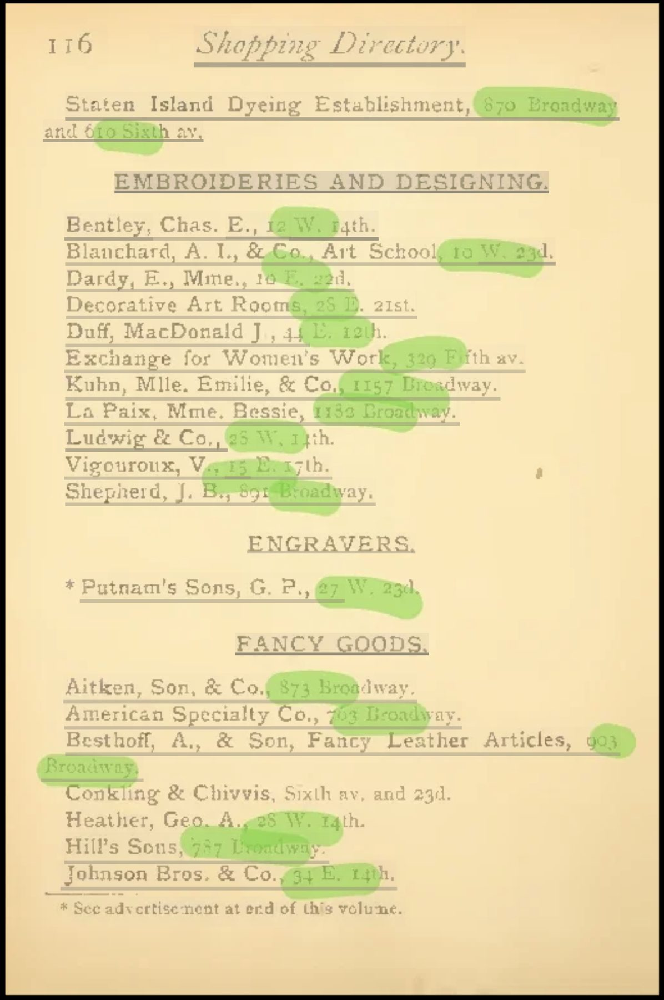
Quotes drawn from this page: 19 20
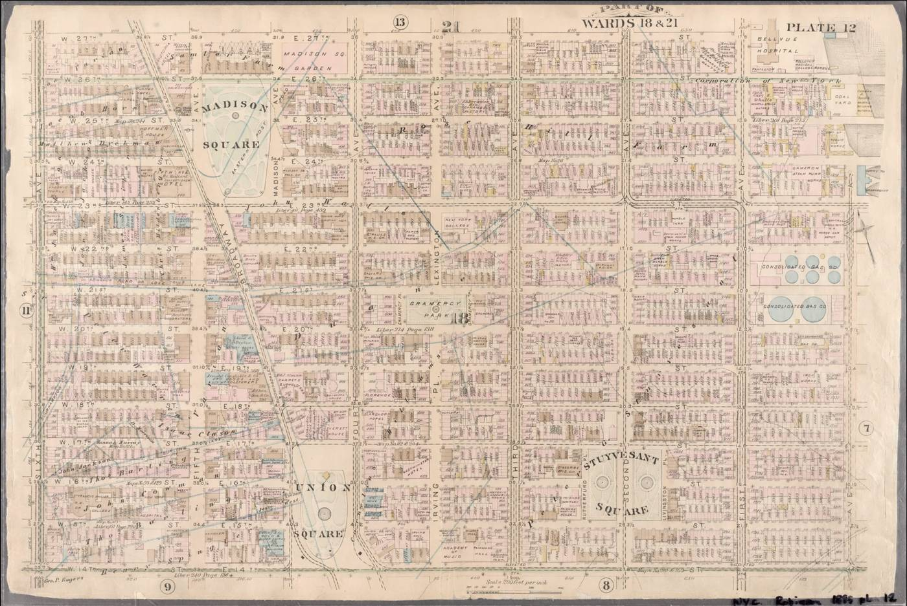
Quotes drawn from this page: 21 22 23 24 25 26 27
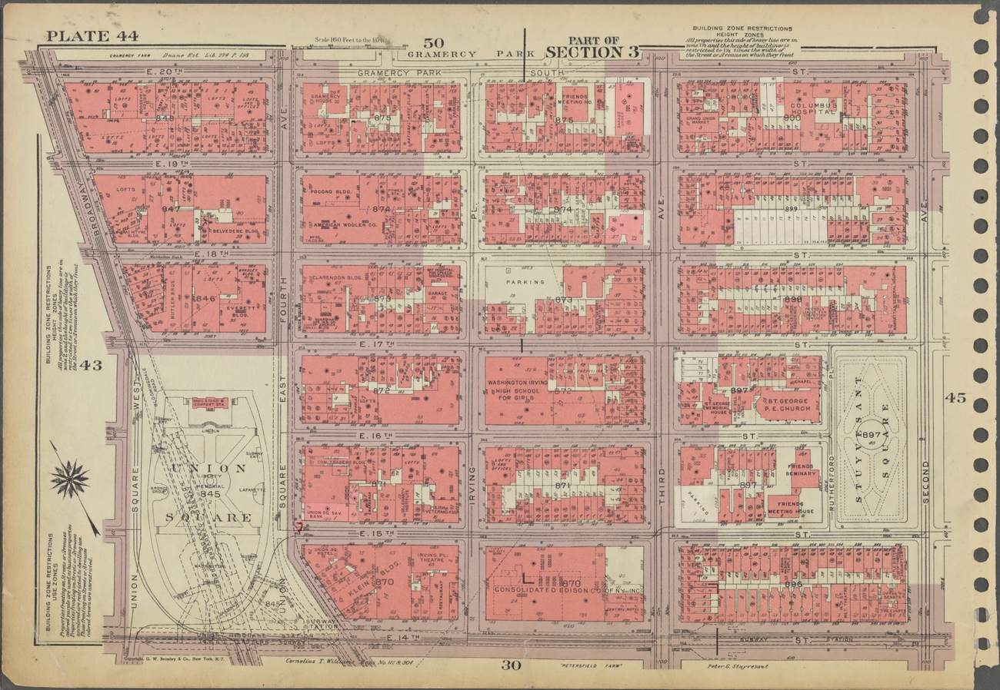
Quotes drawn from this page: 30 31 32 33 34 35 36
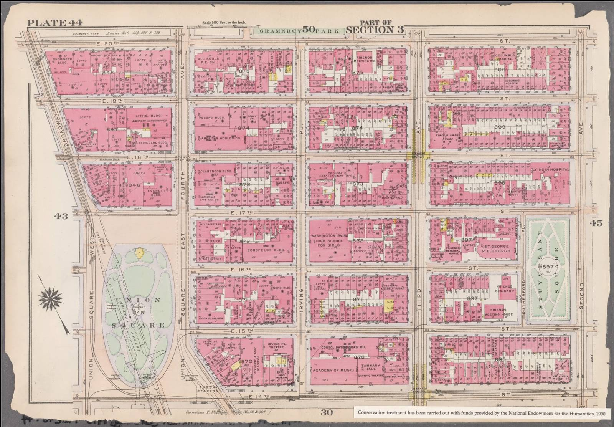
Quotes drawn from this page: 39 40 41 42 43 44 45
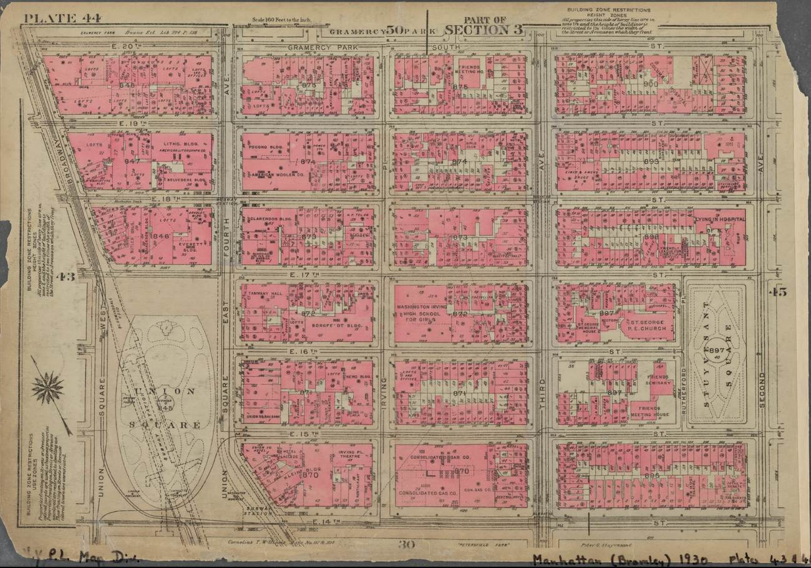
Quotes drawn from this page: 46 47 48 49 50 51 52
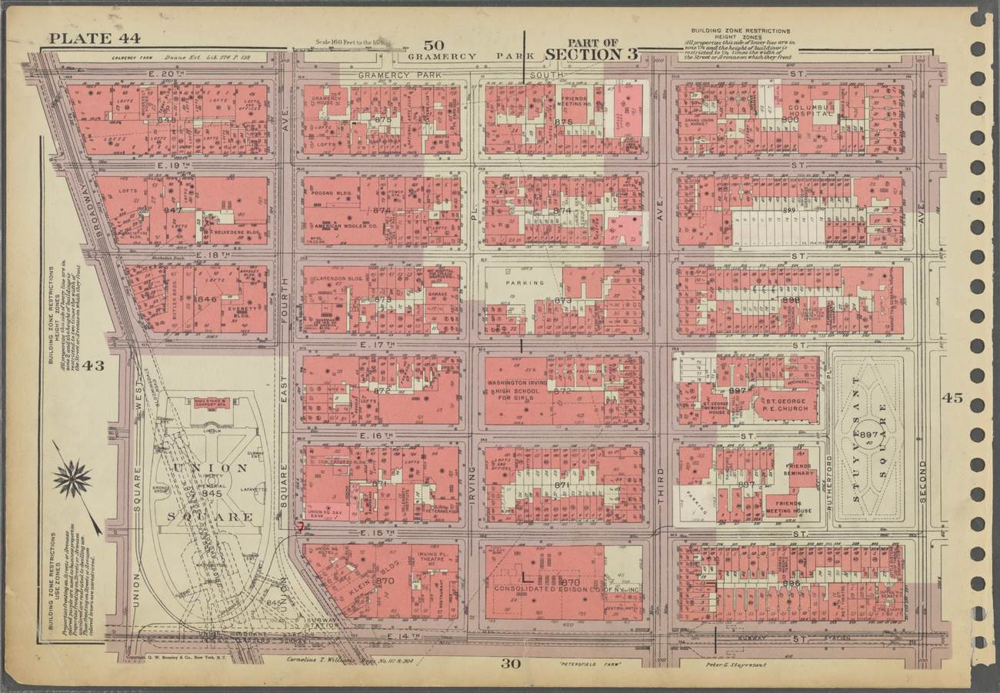
Quotes drawn from this page: 53
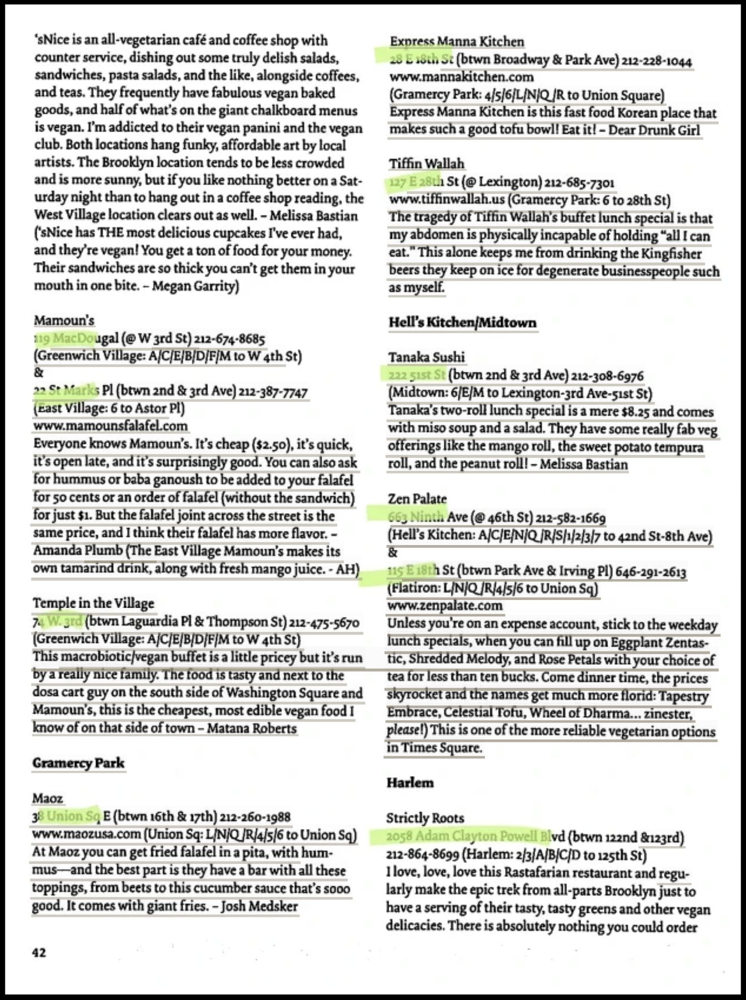
Quotes drawn from this page: 54
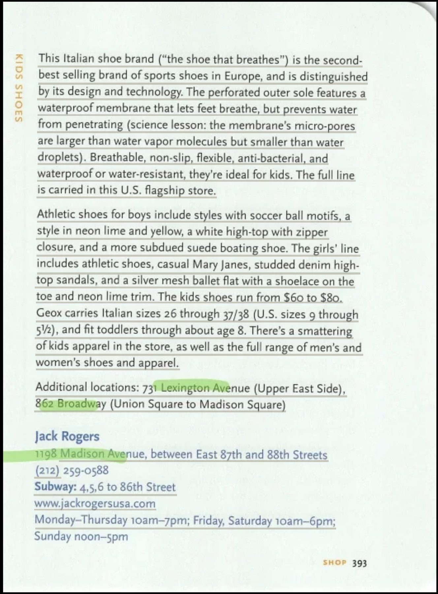